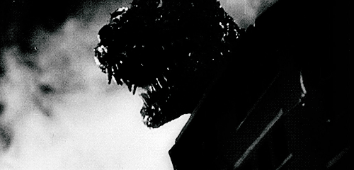

Gojira View
Gojira View
Gojira (ゴジラ) ou como é mais conhecido, Godzilla, é um Kaiju japonês — traduzindo, seria algo como “Criatura Monstruosa” ou “Monstro Gigante” — das séries de filmes do mesmo nome, popularmente conhecido por ser um monstro que destrói todo local que passa, sendo seu principal alvo a cidade japonesa Tóquio. Seu primeiro filme foi lançado em 1954 pela empresa Toho Co. Ltd e dirigido por Ishirō Honda e conta a história do Japão pós a segunda guerra mundial e como a maneira como estão se recuperando pós Hiroshima e Nagasaki, até a invasão do monstro gigante.

Este website, tem como objetivo falar sobre Godzilla e suas épocas, passando tanto por seus filmes, série animada de 2021, onde será abordado um pouco de seus trajes/modelos gráficos utilizados e até mesmo um quiz para você medir seus conhecimentos sobre o tema. E claro, além disso, tem como objetivo, introduzir um pouco desse maravilhoso universo para aqueles curiosos, podendo obter spoilers dos filmes caso queiram apenas conhecer, ou não, caso queiram assistir.
Assim, iremos tratar sobre 35 filmes de godzilla, excluindo a trilogia anime — Planet of Monster, City on the Edge of Battle, e The Planet Eater — e uma de suas séries animadas — Singular Point. Seus designs, sendo desde trajes até mesmo seus CGIs, passando pela Era Showa, Heisei, Millenium, Reiwa (Shin e Ultima), Zilla e por último o do próprio Monsterverse!